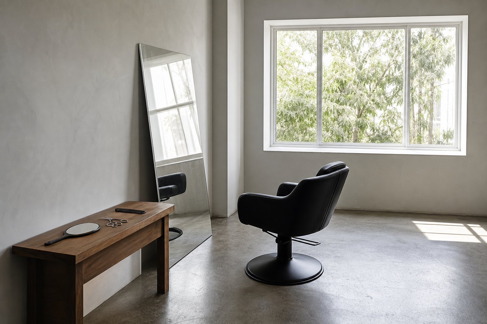
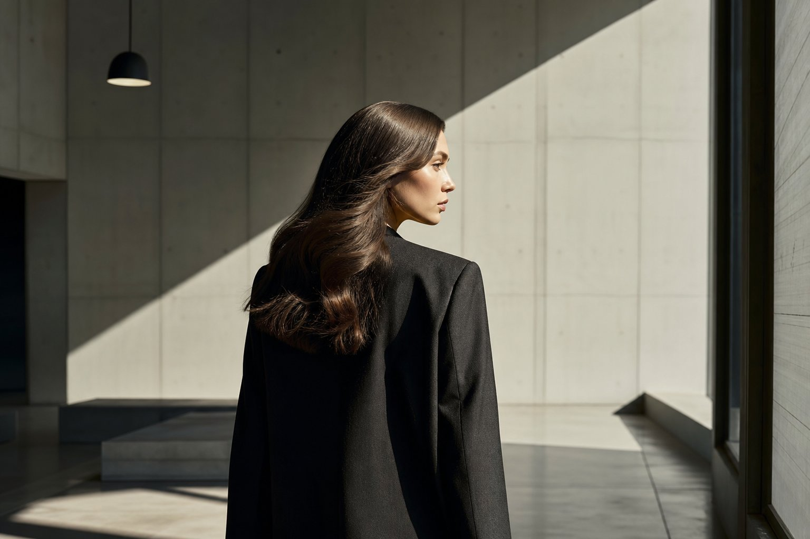
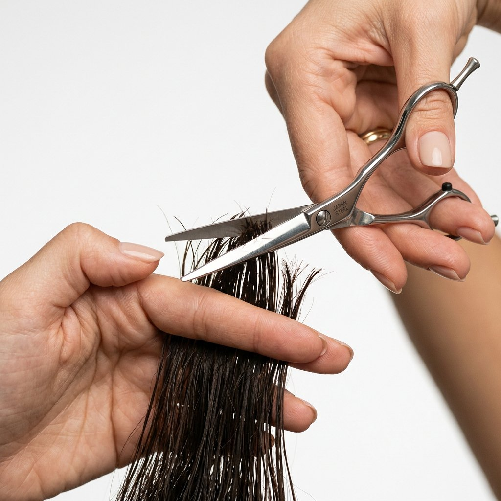
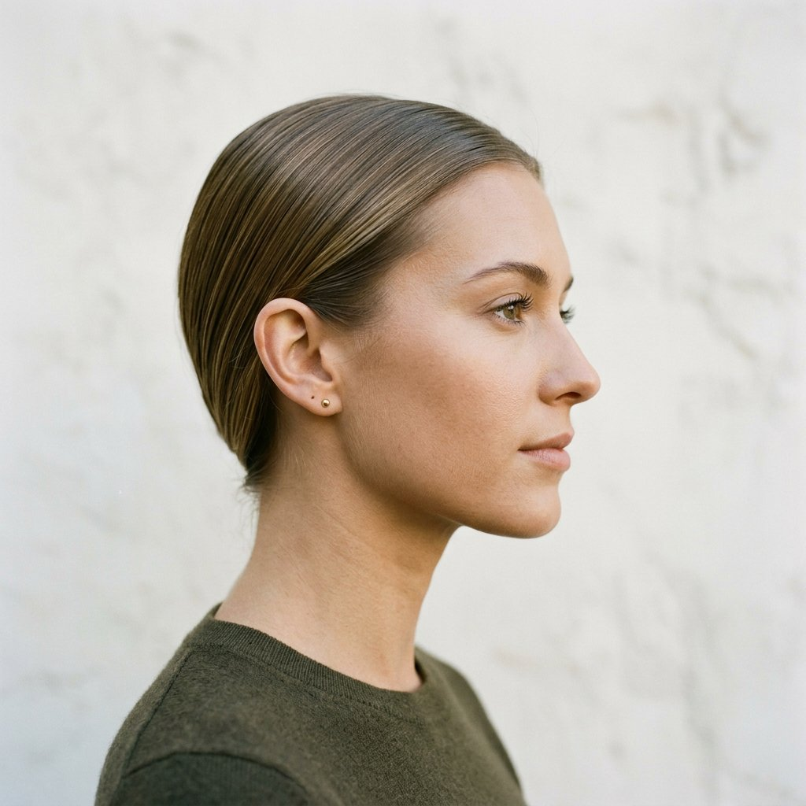
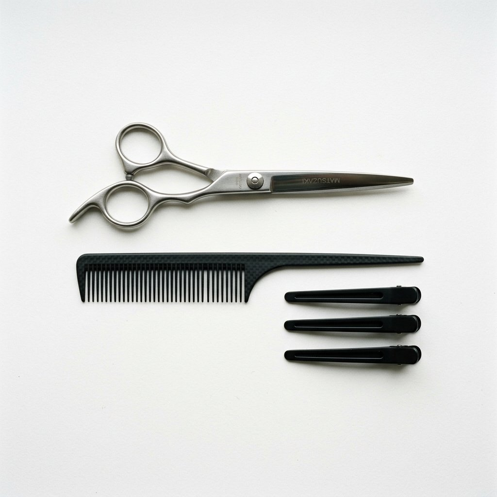

Hair, reduced to its most precise form.
Quiet shape. Controlled softness. Editorial finish.
View the workNothing more than what is necessary. Nothing less than what is essential.
Clean hair is the hardest thing to do well. It requires understanding proportion, controlling texture, and knowing when to stop. Every cut begins with subtraction. What remains after editing is the design.
The luxury is not in what is added. It is in what is removed until only the strongest version of the image remains. This is not simplicity. This is precision.
Selected Work
A curated study of shape, finish, and restraint.
The Precision Method
Understanding the architecture of desire. We begin with silence, observation, and the geometry of the face. Bone structure, growth patterns, density — the data that makes a cut inevitable.
Every decision is subtractive. Mapping form through restraint. Edges that breathe. Lines that resolve. No ambiguity in the silhouette — every angle considered, every curve intentional.
Texture is the detail. The finish tells the truth about the cut beneath it. Healthy hair catches light; great hair holds it. Product-free-looking polish that feels modern, not stiff.
The work completes itself. What remains is inevitable. Hair that looks good from every angle, moves naturally, and feels expensive without obvious effort.
Services
Full consultation, precision cut, wash and finish. 90 minutes.
Styling for shoots, campaigns, and events. Includes consultation and look development.
Refinement of existing shape. Wash, cut, finish. 60 minutes.
In-depth analysis of hair type, growth patterns, and product strategy. No cut.
Quiet luxury for the most photographed day. Trial included.
Look Pathways
Words
"Norman doesn't cut hair. He edits it. I've never felt more myself than after leaving his chair."
— Creative Director, London
"The kind of quiet luxury that makes people ask who your hairdresser is. Without you saying a word."
— Fashion Editor, Vogue
"No drama. No upselling. Just precision, silence, and a result that photographs beautifully from every angle."
— Model
The Experience

Who This Is For
For clients who want hair that looks expensive rather than flashy. People who prefer clean lines, polished finishes, and timeless imagery. Clients who want to look elevated without looking like they tried too hard.
The Session
Studio visits by appointment. Every session begins with a consultation — understanding your face, your lifestyle, and the image you want to project. The result is authored, not decorated.

Ideal For
Campaigns, editorial shoots, events, portraits, luxury everyday, bridal civil ceremonies. Hair that works with architecture, fashion, and minimal interiors.
The Artist
I don't follow trends. I study faces.
Hugo Javier has spent twelve years refining a language of hair that speaks through restraint. Trained in London and Milan, his work bridges editorial precision with the quiet luxury of modern minimalism.
His approach is subtractive — removing until only the strongest shape remains. Every cut is authored, not decorated. The result is hair that looks expensive without obvious effort, moves naturally, and photographs from every angle.
Published in Vogue, GQ, and Harper's Bazaar. Based in Fitzrovia, London.
@hugojavierhairFrom the Chair
Follow


Next available — July 2026